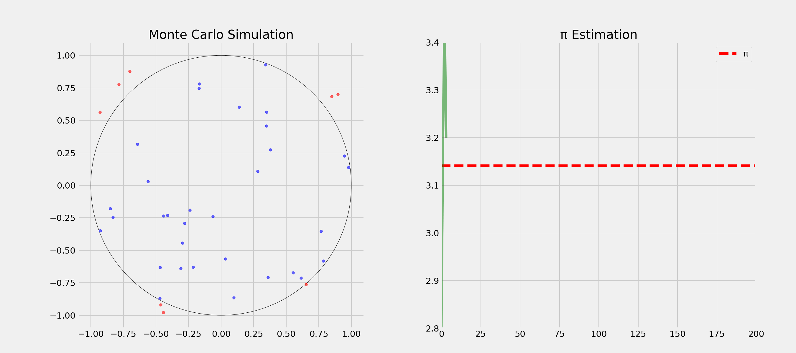

import math
print(math.factorial(52))80658175170943878571660636856403766975289505440883277824000000000000Programming: Everyday Decision-Making Algorithms
Topic: Understanding how randomness powers algorithms and decision-making in computer science and everyday life
. . .
Why this matters: Randomness isn’t just about gambling. It’s a powerful tool that makes computers faster, cryptography secure, and helps us solve problems. Today we’ll learn how embracing uncertainty can lead to better solutions.
Question: What comes to your mind when you think of randomness?
. . .
Question: What’s the opposite of randomness?
. . .
. . .
Question: How would you test if a pair of dice is fair?
. . .
. . .

Randomness is a fundamental aspect of the world
. . .
. . .
Randomness is not just about generating random numbers!
Question: Where do you encounter randomness in daily life?
correct-horse-battery-staple is more secure than Tr0ub4dor&3. . .
Randomness is everywhere around us!
Why do computer scientists love randomness?
. . .
Key Trade-off: Perfect vs. “Good Enough” solutions
Question: Difference between true and pseudo-randomness?
. . .
True Randomness
Pseudo-randomness
Question: How many possible combinations exist in a shuffled deck of cards?
import math
print(math.factorial(52))80658175170943878571660636856403766975289505440883277824000000000000. . .
Computing and evaluating all possible combinations is not feasible!
Question: Anybody ever heard of “Monte Carlo methods”?
. . .
. . .
Question: How could we estimate π?

Question: How and in which order would you visit 10 cities by plane with minimal total distance?
import math
print(math.factorial(10))3628800. . .
Question: What could be a strategy?
. . .
Question: What could be the problem with this approach?
. . .
Not feasible for real-world problems!
. . .
Question: How would you escape a local optimum?
. . .
Question: Why accept worse solutions sometimes?
. . .


What’s more important for a society?
. . .
Freedom
Equality
. . .
Question: Any problem with this question?
You might randomly be:
. . .
Question: If you didn’t know who you’d be born as, what kind of society would you design?
. . .
But that’s not all! We also need to measure success and failure!
. . .
Question: What could be the problem with these measures?
. . .
Question: What is a selection bias?
Definition: Selection bias occurs when the sample data you’re analyzing isn’t truly representative of the population you’re trying to study.
. . .
During WWII, engineers studied returning planes to determine where to add armor. Initially, they focused on areas with most bullet holes. Abraham Wald pointed out they should instead armor the areas with no bullet holes - those were the critical areas where planes didn’t survive to return!
Question: How can randomness promote fairness?
. . .
Question: Which would you prefer?
. . .
Answer depends on your risk aversion!
Question: When should we embrace vs. reduce randomness?
. . .
Embrace When:
Reduce When:
. . .
Many real-world problems benefit from embracing uncertainty rather than fighting it!
. . .
Many problems benefit from fast, good-enough solutions rather than perfect ones.
. . .
That’s it for today’s lecture!
We’ve covered the basics of randomness and its applications. In the upcoming tutorials, we’ll learn how to use LLMs to generate code with randomness.
. . .
Think Python is a great book to start with. It’s available online for free. Schrödinger Programmiert Python is a great alternative for German students, as it is a very playful introduction to programming with lots of examples.
For more interesting literature, take a look at the literature list of this course.
The main inspiration for this lecture. Nils and I have read it and discussed it in depth, always wanting to translate it into a course.↩︎
Social Life